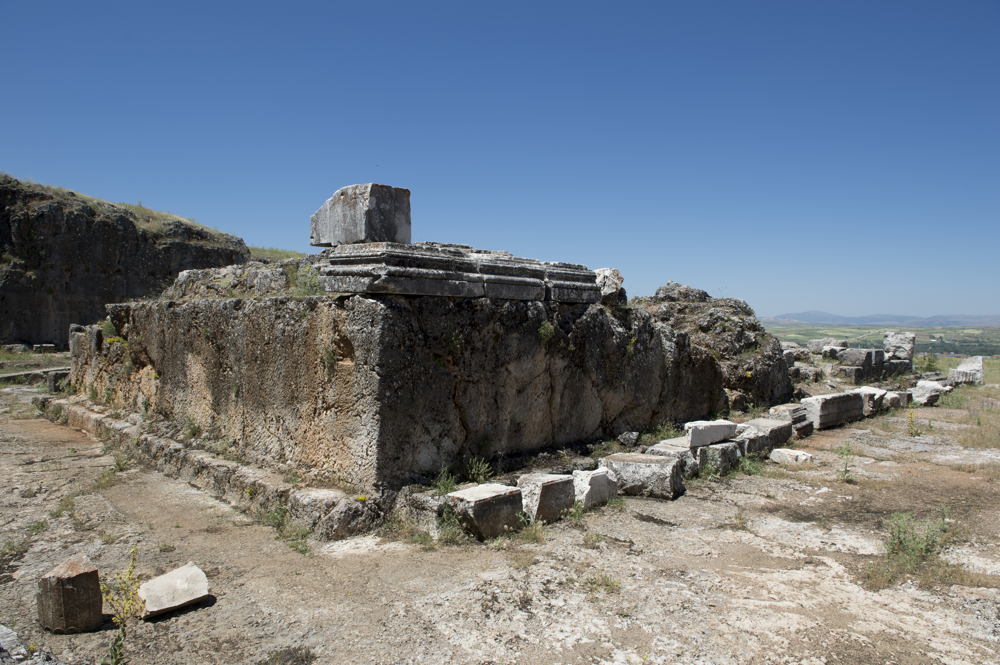

Antioch in Pisidia (Pisidian Antioch)

- Find Name
- Antioch in Pisidia (Pisidian Antioch)
- Description
- A Hellenistic city refounded by Augustus in 25 BC as a Roman colony of Italian veterans, Colonia Caesarea Antiocheia, near modern Yalvac in south-central Turkey, and the leading city of southern Galatia. Excavations have uncovered an imperial cult temple to Augustus set in a semicircular plaza cut into the rock, with a monumental gateway, colonnaded streets, a theatre, baths, an aqueduct, and a large early Christian basilica traditionally called the Church of St Paul, under which a first-century building identified as the synagogue has been found. Augustus had a copy of his Res Gestae, the record of his achievements, inscribed at the sanctuary — the empire's gospel, in stone, in the city where Paul would preach another.
- Historical Period
- Hellenistic to Byzantine, 3rd century BC onwards
- Evidence Class
- Direct
- Interpretations
- Scholars agree the ruins north of Yalvac are biblical Antioch in Pisidia (strictly, Pisidian Antioch; the city lay in Phrygia, with Pisidia between it and the coast, matching Acts 14:24). The identification of the first-century building under the Church of St Paul as the synagogue of Acts 13 is the excavators' proposal, not a certainty, and is stated as such. This Antioch is distinct from Antioch on the Orontes, and is not confused with it here.
- Alternative Names
- Pisidian Antioch; Colonia Caesarea Antiocheia
- Related Places
- Related Books
- Related People
- Scripture Illuminated
- Biblical Significance
- Antioch in Pisidia is where Paul's first recorded sermon was preached: on the Sabbath in the synagogue, Paul traced Israel's story from Egypt to David to Jesus, and announced 'through this man is preached unto you the forgiveness of sins' (Acts 13:38). The next Sabbath 'almost the whole city' gathered (Acts 13:44), and when opposition drove Paul and Barnabas out, they shook off the dust of their feet (Acts 13:51) — yet a church remained, and Paul returned to strengthen it on the way home (Acts 14:21-24). Paul later counted Antioch among the places where he endured persecutions from which 'the Lord delivered me' (2 Timothy 3:11).
- Artifact Date
- Refounded as a Roman colony by Augustus, 25 BC; Temple of Augustus, after 2 BC; early Christian basilica, 4th century onwards
- Current Location
- In situ, Turkey (finds in the Yalvac Museum)
- Date Discovered
- Identified by Francis Arundell, 1833; excavated by William Ramsay, 1912-1914, and the University of Michigan, 1924; Turkish excavations resumed 1979
- Discovery Location
- Near Yalvac, Isparta Province, south-central Turkey
- Timeline Era
- Early Church
Awaiting Review Not yet checked against scholarly sources. Treat its claims as provisional until this entry is reviewed. About verification
Last reviewed: not yet reviewed